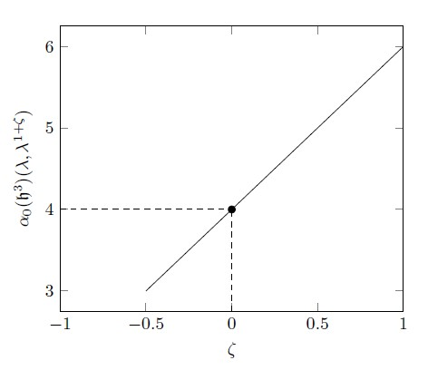

My name is Tim Höpfner, and I was born in 1996 in Kiel, Germany, where I spent the first years of my life until I moved to Kassel, where I attended school.
There, I graduated from the Wilhelmsgymnasium Kassel with Abitur (german high school diploma).
Afterwards, I moved to Göttingen to study mathematics at the Georg-August-Universität Göttingen from 2014 until 2023, obtaining my Bachelor, Master and Dr. rer. nat. (PhD) in pure mathematics.
My main research interest lies inbetween the fields of topology and differential geometry, though I am curious to learn about all mathematics that I encounter.
During my time as a doctoral student from 2019 until 2023, I was lucky to be part of the Research Training Group "RTG 2491 - Fourier Analysis and Spectral Theory" as an associated member,
allowing me to work and study with many excellent young researchers from all around the world and many areas of mathematics.
Furthermore, I was able to teach several courses at Göttingen as an lecture assistant. In total I taught mathematics to around 1000 students over seven courses. Mainly, this includes students of mathematics, but also students of computer sciences, biology, geology and molecular medicine.
In my free time, I love to create (and sometimes solve) analytic problems. For example, I'm an avid chess player and a fan of many other competitive strategy games.
I enjoy playing tennis and I play the guitar.
Research
PhD Thesis - "Novikov-Shubin Invariants of Nilpotent Lie Groups"
In my PhD thesis, I focused on studying a mathematical concept known as Novikov-Shubin invariants.
These invariants provide information about the long-term behavior of heat decay on infinite spaces.
When dealing with finite spaces, like the torus shown on the left,
the study of heat evolution over time is a classic problem in physics.
In such cases, we know precisely how quickly heat will spread out uniformly.
This spreading happens with exponential speed, \(e^{-t\lambda_1}\), depending on a parameter \(\lambda_1>0\),
which appears in various areas of mathematics.
The value of \(\lambda_1\) is the smallest non-zero eigenvalue of the Laplace operator,
which is an essential operator in both geometry and physics.
By connecting this parameter to the heat equation and physics,
we can establish relationships with other quantities.
For instance, we can establish bounds on \(\lambda_1\) based on a geometric quantity known as Cheeger's constant.
Cheeger's constant measures how easily a space can be divided into two approximately equal-sized pieces.
If it is easy to do so, it becomes difficult for heat to move from one side to the other,
resulting in slower heat diffusion and a smaller \(\lambda_1\).
Interestingly, we can approach the same topic from a different perspective by considering heat energy as the kinetic energy of atoms.
Therefore, understanding how heat travels through space requires us to comprehend the movement of atoms first.
Physics tells us that atoms move according to a stochastic process called Brownian motion.
The mixing time of this Brownian motion corresponds to the time it takes for atoms to distribute evenly throughout space,
which aligns with the even spreading of heat.
Thus, the mixing time is also connected to \(\lambda_1\).
On infinite spaces, the situation changes dramatically.
It can happen that we still have exponential decay, \( e^{-t\lambda_1} \), according to a lower bound on the spectrum of the Laplace operator.
But it can also happen that no such lower bound exists and \(\lambda_1=0\) would be the only reasonable choice.
However, since \( e^{-t\cdot 0} = 1 \) is constant, this does not make sense. Indeed, it turns out that sometimes exponential decay is no longer the right model.
Instead, we see slower decay of heat.
If the decay is polynomial according to some polynomial \(t^{-\alpha_0/2}\), we call this new, extra parameter \(\alpha_0\) the zeroth Novikov-Shubin invariant.
This number is interesting, not only because it describes the heat decay but also because it again relates to many other important areas of mathematics.
Indeed, it again measures spectral properties of the Laplace operator acting on functions.
It measures, how much spectrum the operator has close to zero, which, for example, tells us something about invertibility of the Laplacian.
Naturally, we can therefore consider this kind of invariant also for other operators, for example, the higher Laplace operators acting of differential forms of our manifold, defining higher Novikov-Shubin invariants \(\alpha_k\).
These invariants are very interesting, however, they are also very hard to compute.
Classically, a result by N. Th. Varopoulos relates \(\alpha_0\) again to a stochastic quantity, the return probability of a random walk.
I developed a framework in which we obtain a generalisation of this result for the higher Novikov-Shubin invariants.
For this, I describe explicitly stochastic processes and their relation to the higher Laplace operators.
Here, we want to assume that our spaces comes with a so-called CW structure, meaning that we can view it as being build iteratively from blocks of increasing dimension.
The stochastic process relating to \(\alpha_k\) is a random walk, where the random walkers move around on the \(k\)-dimensional building blocks.
Interestingly, these building blocks can have either of two different orientations.
If two random walkers meet at the same block but with different orientations they cancel each other out, similar to how particles and anti-particles cancel out when they meet.
This opens a new avenue of studying the Laplace operators as well as their Novikov-Shubin invariants from the world of stochastics.

Another approach to computing these invariants is a result by M. Rumin, who developed a way of computing estimates on Novikov-Shubin invariants in some situations.
Simplifying this result a bit further, I implemented this approach as a python program to compute estimates for all nilpotent Lie groups up to dimension six.
Unfortunately, it turns out that the approach often fails and cannot give any bounds on the invariants.
Based on the method behind the proof of M. Rumin's result, I defined a new, more detailed version of Novikov-Shubin invariants.
The basic idea is the following observation: If we look at how heat spread out through space, we get the same result by waiting twice as long as we get from scaling all distances in our manifold by a factor 1/2.
We consider now spaces with multiple directions, so-called fibre bundles.
In these spaces, we can start to scale different directions at different speeds and study how heat behaves on these scaled spaces.
This tells us something about the contributions that the different directions have towards the Novikov-Shubin invariants of our space.
Master Thesis - "The Mayer-Vietoris Spectral Sequence for Coarse Generalized Homology"
In my Master Thesis, I studied coarse geometry. Here, we are interested in the large-scale properties of spaces - in contrast to topology, studying the small-scale structure.
In algebraic topology, we like to define invariants to describe and compare our spaces, that is, numbers or other simple objects.
If we are able to compute these invariants easily, we can (sometimes) use them to figure out whether two spaces are different.
In topology, one of the most classical type of invariants are homology theories.
One important tool to compute these is the Mayer-Vietoris sequence.
Given a complicated space, we can cut it into two smaller pieces.
If we understand each of the pieces and their intersection, we can recover the information of the total space.
Of course, we can iterate this procedure and thereby cut our space in any finite number of pieces.
The Mayer-Vietoris spectral sequence is a complex mathematical tool that takes this one step further, as it allows us to cut the space even into infinitely many pieces.
While all of this was known for a long time for topological spaces, for coarse spaces only the usual Mayer-Vietoris sequence was known.
A previous result indicated, that also the infinite version should hold, however, in my thesis I point out that this previous result is flawed.
While I establish a spectral sequence for easier computations for finite decomposition, I show that such an infinite decomposition cannot be used to compute coarse homology from infinite decompositions.
I also give an explicit counterexample to show precisely, why this argument fails.
Bachelor Thesis - "Explicit Motion Planning for Collision-Free Motion in \(\mathbb{R}^n\)"
In my Bachelor thesis, I studied the problem of motion planning from a point of view of topology ("Topological Complexity"):
Let's say we have an empty stace with arbitrarily many (moving and non-moving) obstacles and any number of agents (e.g., robots) that need to move around freely without colliding with the obstacles or other agents.
I describe explicitely a (topological) algorithm that considers the current location and the target position of each of the agents and produces for each agent a path that they can move along.
Teaching
During my time as a doctoral student at Göttingen, I taught multiple courses as an assistent:
Winter 2022/23: Mathematisches Propädetikum with Prof. Dr. Stefan Halverscheid
The mathematical propaedeutic for all incoming students of mathematics, physics and computer science.
Summer 2022: Analytische Geometrie und Lineare Algebra II für das Lehramt with Dr. Stefan Wiedmann
The second linear algebra course for didactics.
Winter 2021/22: Diskrete Mathematik für Studierende der Informatik with Prof. Dr. Evelina Viada
A course on discrete mathematics for stundents of computer sciences.
Summer 2021: Differenzial- und Integralrechnung II für das Lehramt with Prof. Dr. Sebastian Bauer
The second analysis course for didactics.
Winter 2020/21: Mathematik für Studierende der Biologie und Geowissenschaften with Dr. Stefan Wiedmann
A course on mathematics for all students of biology, geology and molecular medicine.
Summer 2020: Differenzial- und Integralrechnung II für das Lehramt with Prof. Dr. Sebastian Bauer
The second analysis course for didactics.
Winter 2019/20: Differential- und Integralgralrechnung I with Prof. Dr. Dorothea Bahns
The first analysis course for students of mathematics.
Personal Interests
Contact
Contact me by email: timhoepfner (at) outlook (dot) de